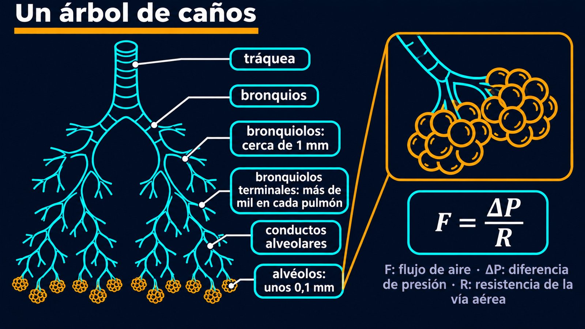

Resistencia de la vía aérea, espirometría y asma
Respirás miles de veces por día sin pensarlo, y cada vez repetís el mismo truco físico: no chupás el aire, sino que agrandás un recipiente y dejás que la atmósfera lo empuje adentro. Lo demás es un problema de cañerías, con un árbol de caños que se ramifica hasta hacerse microscópico.
La respiración depende de la diferencia de presión entre la atmósfera y los pulmones [1]. Si un gas ocupa más lugar, su presión baja: es la ley de Boyle [1]. Al inspirar, los músculos agrandan la cavidad del tórax, la presión dentro de los alvéolos baja y el aire entra. Al espirar, sale. La diferencia necesaria es muy poca: la presión dentro de los pulmones se mueve entre unos −2 y +3 mm Hg respecto de la atmósfera [2].
Entre el pulmón y la pared del tórax, la presión es siempre más baja que dentro de los alvéolos [1]. La elasticidad del pulmón y la tensión superficial del líquido alveolar tiran hacia adentro, y la pared del tórax tira hacia afuera [1]. Esa succión es lo que mantiene el pulmón inflado.
El fuelle: un fuelle no aspira porque tenga ganas. Abrís las tapas, el volumen aumenta, la presión adentro baja y el aire de afuera entra solo. Tu diafragma es la mano que abre el fuelle.
El aire baja por la tráquea hasta los bronquios, que se siguen ramificando en un árbol bronquial [3]. Los bronquiolos, de cerca de 1 milímetro de diámetro, se dividen hasta los bronquiolos terminales: más de mil en cada pulmón [3]. Después vienen los conductos alveolares y los racimos de alvéolos [3].

El tamaño de la vía aérea es el principal factor de la resistencia al flujo [1]. El flujo se relaciona con la presión como en cualquier caño [1]:
La fórmula es la de las resistencias vasculares. Si el flujo fuera laminar, la ley de Poiseuille diría que reducir el radio a la mitad multiplica la resistencia por 16 (un cálculo propio). Por eso, un estrechamiento moderado de los bronquios, como en el asma, puede hacer tan difícil respirar: con la misma fuerza, pasa mucho menos aire (un razonamiento propio a partir de esa ley).
En reposo, entra y sale un volumen corriente de unos 500 mililitros en cada respiración [1]. Con un esfuerzo máximo, una persona puede mover mucho más: la capacidad vital, la suma de los volúmenes salvo el residual, va de 4000 a 5000 mililitros [1]. El pulmón nunca se vacía del todo. La capacidad pulmonar total ronda los 6000 mililitros en varones y los 4200 en mujeres [1].
La espirometría mide esos volúmenes. Sus resultados se usan para diagnosticar enfermedades respiratorias y evaluar tratamientos [1]. Físicamente, una vía estrecha se nota menos en el volumen total que en lo rápido que puede salir: la resistencia limita el caudal, no cuánto hay adentro (un razonamiento propio).
Un filtro en movimiento: las vías aéreas no son solo caños. Están recubiertas por un epitelio con células que producen moco, y cilios que barren el moco y la suciedad [3]. Es otra pieza de mecánica de fluidos, a una escala donde mandan otras reglas: las de los flagelos y cilios.
Respirar es hacer lugar y dejar que la presión de afuera empuje. Con diferencias de unos pocos milímetros de mercurio, el aire recorre un árbol que se ramifica hasta los alvéolos. Como la resistencia depende del tamaño de los conductos, un cierre pequeño se siente mucho.
Pregunta para la comunidad: Si tomás aire por un sorbete largo, cuesta más. Con la ley de Poiseuille, ¿qué es peor: duplicar el largo del sorbete o reducir su radio a la mitad? ¿Por qué un esnórquel no puede tener varios metros, además de por eso?